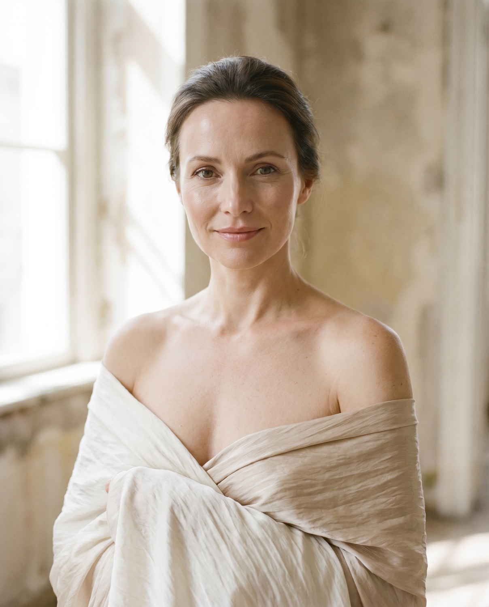
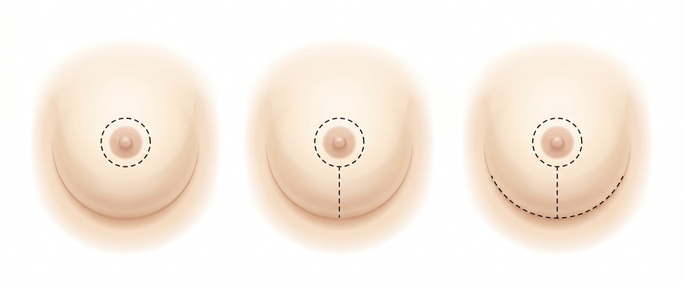

Periareolar
Also called the donut lift. The incision runs around the edge of the areola, leaving a single, discreet circular scar. Best suited to a modest lift.

A breast lift, or mastopexy, raises and reshapes the breast to restore a firmer, more youthful contour, naturally and in proportion with your frame, by Consultant Plastic Surgeon Mr Roshan Vijayan.
Outcomes from Mr Vijayan's own patients, balanced, beautifully healed and entirely natural. Drag the handle on each case to reveal the journey.

MastopexyA breast lift, known medically as a mastopexy, is a surgical procedure that raises and reshapes the breasts. Mr Vijayan removes excess, stretched skin and tightens the underlying tissue to restore a firmer, higher and more youthful contour, repositioning the nipple and areola to a natural height.
Importantly, a lift reshapes rather than resizes. It restores shape and position rather than significantly changing volume. Where you would also like more fullness, or a smaller size, a lift can be combined with an implant or a reduction in a single operation.
Ask Mr Vijayan a question →A breast lift may suit you if you are troubled by sagging, lost firmness or a change in shape, particularly after the life events that naturally stretch the skin and tissue. You might consider it if you experience:
Mr Vijayan will assess your skin quality, breast tissue and goals, then advise honestly whether a lift, or another approach, will serve you best. A stable weight and being a non-smoker help support the safest result and the longest-lasting outcome.
Find out if it suits you →They solve different problems. Understanding the difference helps you choose the right path, and sometimes the answer is both.
Many patients benefit from a combination, an augmentation-mastopexy, which lifts the breast and adds fullness in one procedure. Mr Vijayan will recommend the right approach for your body and your goals at your consultation.
The right technique depends on how much lift is needed and the quality of your skin. The goal is always the best shape with the least scarring for your case.

Also called the donut lift. The incision runs around the edge of the areola, leaving a single, discreet circular scar. Best suited to a modest lift.
The lollipop lift, with an incision around the areola and a vertical line down to the crease. It allows more reshaping while keeping scarring contained.
The anchor lift, adding a discreet incision along the breast crease. It gives the fullest reshaping and skin removal for more pronounced changes.
Surgery is carried out under general anaesthetic and, for more complex cases, alongside a second consultant surgeon, for shorter operating times and an added layer of safety. Mr Vijayan makes the incisions for your chosen technique, removes excess skin and reshapes the breast tissue, then lifts and re-centres the nipple and areola.
The breast is closed with fine, dissolvable sutures placed for the most discreet healing, and you are supported in a soft surgical bra. Most patients return home the same day or after a single night's stay.
 Mr Roshan Vijayan · FRCS(Plast)
Mr Roshan Vijayan · FRCS(Plast)
“A breast lift is about restoring balance and confidence, with a result that looks entirely, naturally you.”
Your breast lift is carried out by Mr Roshan Vijayan, a Consultant Plastic Surgeon who trained across more than twenty teaching hospitals, among them the Queen Victoria in East Grinstead, one of the birthplaces of plastic surgery.
He brings an artistic eye and reconstructive precision to breast and body surgery, planning each case individually and, for more complex procedures, operating alongside a second consultant surgeon for shorter, safer surgery. From your first call to your final review, your care stays personally with him.
More about Mr Vijayan →You will go home in a supportive surgical bra. Some swelling, bruising and tightness is normal. Mr Vijayan calls you personally on day one.
Most discomfort settles quickly. Many patients return to desk-based work within one to two weeks, avoiding any strenuous activity.
Gentle activity is gradually resumed. The supportive bra is worn day and night while the breasts settle into their new shape.
Most normal activity, including exercise, is comfortably resumed. Swelling continues to settle and the contour refines.
Scars soften and fade considerably, and the final, natural shape becomes clear. Aftercare with Mr Vijayan is unlimited throughout.
All surgery carries some risk. Breast lift surgery is generally very safe, and complications are uncommon, but Mr Vijayan will discuss every consideration fully and honestly so your decision is a confident and informed one.
Your safety is paramount. Consultant-led aftercare, a day-one call and unlimited follow-up mean any concern is seen and addressed by Mr Vijayan personally.
Every breast lift is planned individually, so the final price depends on the technique and the complexity of your case. As a guide, breast lift surgery with Mr Vijayan typically starts from:
Indicative guide. Your exact, all-inclusive quote is confirmed in writing after your consultation, with no hidden costs.
Your fee includes
Care that is genuinely personal, and surgery that is genuinely safer.
Mr Vijayan personally reviews you, answers emails within a day and calls on day one after surgery, never handed to others.
Your lift is studied and drawn up individually, with a thorough written summary so you can reflect, unhurried, before deciding anything.
Time to recap, ask anything that has surfaced and confirm, built into the process as standard.
A frank, expert view of what surgery can and cannot achieve, with no pressure, ever.
For more complex procedures, Mr Vijayan operates alongside a second consultant surgeon, for greater precision, less time under anaesthetic and an added layer of safety.
A lift on its own reshapes and raises the breast rather than changing its size significantly. If you would also like more fullness, a lift can be combined with an implant; if you would prefer a smaller size, it can be combined with a reduction. Mr Vijayan will plan this with you at your consultation.
This depends on the technique needed for your shape, periareolar, vertical or anchor. Scars may sit around the areola, in a single vertical line, or with a small additional crease incision. They are placed as discreetly as possible and fade considerably over the months that follow.
Most patients describe tightness and soreness rather than severe pain in the first days, well managed with simple pain relief. Discomfort settles quickly, and Mr Vijayan and his team support you throughout recovery.
A breast lift gives lasting results, though the natural ageing process, gravity, weight changes and future pregnancies will continue over time. A stable weight helps your result last as long as possible.
Many women are able to breastfeed after a lift, though it cannot be guaranteed. If you are planning a pregnancy, it is worth discussing the timing of surgery with Mr Vijayan.
Gentle movement is encouraged early on. Light activity is usually resumed by three to four weeks, with most exercise, including upper-body and high-impact activity, comfortably resumed from around six weeks.
Enquiries are answered personally, usually within a day. There is no pressure, only an honest, expert opinion on whether a breast lift is right for you.
Request a Consultation